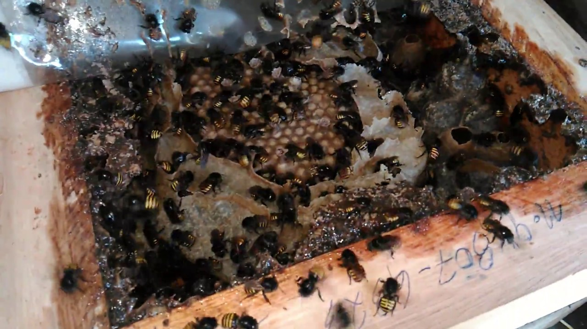
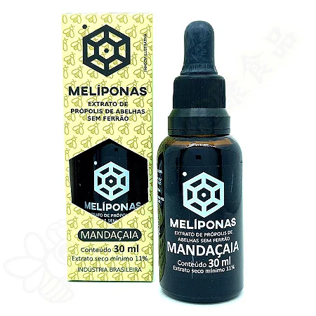

Curiosidades
Nomes populares:Além de mandaçaia, essa abelha também é conhecida como abelha sem ferrão.

Coméia de Jataí-preta (Mandaguari preta)
Comportamento social:As abelhas mandaçaia apresentam um comportamento social complexo, com divisão de tarefas entre as operárias.
A comunicação é eficiente e ocorre por meio de feromônios, que ajudam na organização das atividades e na defesa da colmeia.
Produtos: Embora produzam menos mel que outras abelhas, o mel da mandaçaia é muito valorizado por suas propriedades medicinais e seu sabor único.
O própolis, também coletado por elas, possui ação anti-patogênica e é amplamente utilizado em produtos de saúde.

Produto feito de própolis (Não patrocinado)
Construção do favo: O favo das mandaçaias é construído de forma irregular, utilizando cera e resina para criar células que armazenam mel,
pólen e larvas, adaptando-se às condições do ambiente.
Resistência a doenças:Essas abelhas apresentam uma resistência relativamente alta a doenças,
x o que as torna mais adequadas para a criação em sistemas de produção orgânica e sustentável.